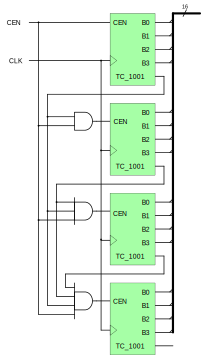
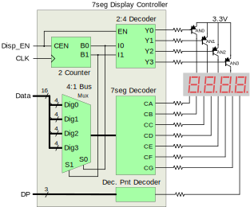

In this design challenge, you are going to be asked to put combinational circuits, sequential circuits, and state machines together and design a stopwatch on the Blackboard.
Be able to code combinational and sequential circuits behaviorally and structurally in Verilog HDL;
Be able to design and implement state machines to encode the functional description of a digital system.
After you’re done, you should:
Be able to design a complex digital circuit using state machine, combinational circuit, and sequential circuit components.
Requirements
1. Stopwatch with Start, Stop, Increment, and Clear Functionality
In this project, you need to create a four-digit stopwatch on your board, using the seven-segment display as an output device. The stopwatch should count from 0.000 to 9.999 seconds and then roll over, with the count value updating exactly once per millisecond. Each time the counter rolls over, update a 4-bit binary counter and display the bits on four digits of the seven-segment display.
For this part the stopwatch requires three push button inputs: start, stop, increment, and clear (reset). The increment function should cause the displayed count value to increment once each time the button is pressed, regardless of how long the increment button is held down.
Hint #1 - System block Diagram
You can find a partial/incomplete block diagram in Fig. 1 below. According to the block diagram in Fig. 1, you have built some of the blocks already in previous projects, e.g., seven-segment decoder, 4-1 bus mux, clock divider, 2-4 decoder, and 2-bit binary counter. New modules you need to design at for this project are the controller block and the decimal counter.
Figure 1. Stopwatch block diagram.
Note that not all behaviors are fully specified in the design requirements section above. For example, if the timer is currently running and the increment button is pressed, no requirement is given to specify how the timer should behave. As an engineer, you must understand the design intent, and create behaviors for underspecified behaviors that are consistent with your understanding of the intent. In practice, it is difficult (or even impossible) to completely specify every behavior in a written document, so engineers frequently invent behaviors where specifications are lacking. Figures providing greater detail for the blocks shown above are shown below.
Hint #2 - Decimal Counter
Figure 2. 4-digit Decimal Counter
The timer requires a four-digit decimal counter. Such a counter can be built from four individual counters that each count between 0 and 9 (0000 to 1001), and then roll over from 9 back to 0, creating a continuous count pattern with 10 binary numbers.
Individual counters are based on 4-bit binary counters that each detect when the pattern 1001 is present on their outputs. When 1001 is detected, the counters reset themselves back to 0000 and issue a terminal count (TC) signal to indicate the count range is complete and counter is resetting back to zero.
Each counter also uses an enable signal (CEN). When CEN is asserted, the counter will increment with each clock edge, but when it is deasserted, the counter will ignore the clock and hold at its present state. The CEN signal can be used to enable more significant counters each time a less significant counter completes its count range.
The TC signal is typically driven by logic gate combining the count bits according to some function (in our case, TC_1001 is generated by a 4-input AND gate detecting 1001). TC_1001 will be asserted for as long the 1001 pattern is present on the counter outputs. In the least significant counter, this is a single clock period. But in the next most significant counter (representing the 10ms position in a four digit decimal number), the 1001 pattern will be present for 10 clock periods, and so its TC_1001 signal will be asserted for 10 system clock periods.
To keep the next most significant counter from counting 10 times (during the period TC_1001 is asserted), the TC_1001 signal from the first counter must be combined with the TC_1001 signal from the next most significant counter. In fact, a little thinking about the problem will reveal that each TC_1001 from more significant counters must be combined with all such signals from all less significant counters.
The outputs of the four individual counters can be assembled into a single 16 bit bus for transport to the seven-segment display controller.
Hint #3 - Seven Segment Display Controller
The block diagram below shows a structural design of the seven segment display controller.
Figure 3. Seven Segment Display Controller
Note that not all behaviors are fully specified in the design requirements section above. For example, if the timer is currently running and the increment button is pressed, no requirement is given to specify how the timer should behave. As an engineer, you must understand the design intent, and create behaviors for underspecified behaviors that are consistent with your understanding of the intent. In practice, it is difficult (or even impossible) to completely specify every behavior in a written document, so engineers frequently invent behaviors where specifications are lacking. Figures providing greater detail for the blocks shown above are shown below.
Final Result of your Stopwatch
Notice from the video that pushbuttons are used to “start”, “stop”, “increment”, and “clear” your stopwatch.
2. State Diagram of the Stopwatch Controller
Draw a state diagram of your stopwatch controller on a paper and explain to the teaching assistant how it works.